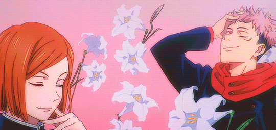

La serie: Anime
Conocé un poco de las temporadas disponibles!
Conocé un poco de las temporadas disponibles!

La primera temporada, con 24 capitulos totales, nos presenta el mundo de los hechiceros y las maldiciones a través de Yuji Itadori, un estudiante que termina convirtiéndose en el recipiente de Ryomen Sukuna, uno de los seres malditos más poderosos de la historia.
Dentro de esta, podremos conocer personajes importantes y unicos, algunos amigos de Yuji y otros con ganas der ver el mundo arder.
La historia sigue a Yuta Okkotsu, un joven perseguido por una maldición relacionada con su amiga de la infancia, Rika.
Yuta ingresa a la escuela de hechicería, donde aprende a controlar su poder, mientras se enfrenta a una amenaza que busca cambiar el mundo de los hechiceros.
En la primera parte, Gojo y Geto todavía son estudiantes y reciben la misión de proteger a Riko Amanai, el Recipiente de Plasma Estelar. Estos acontecimientos son fundamentales para comprender la relación entre Gojo y Geto y cómo ambos terminan tomando caminos completamente diferentes.
La segunda mitad adapta uno de los acontecimientos más importantes de la serie: el Incidente de Shibuya.
Nos ubica en el 31 de octubre de 2018, una barrera aparece sobre Shibuya y atrapa a numerosos civiles. El objetivo de las maldiciones es atraer a Gojo y conseguir sellarlo , es decir, atraparlo y desaparecerlo.
El Incidente de Shibuya cambia radicalmente el mundo de Jujutsu Kaisen y sirve como punto de partida para los acontecimientos de la tercera temporada
La tercera temporada continúa directamente después del Incidente de Shibuya y adapta la primera parte del arco conocido como Culling Game, llamado en español Juego de la Extinción o Juego del Sacrificio, dependiendo de la traducción.
Después de Shibuya, el mundo de los hechiceros queda profundamente alterado. Yuji Itadori vuelve a estar condenado a muerte, mientras que Yuta Okkotsu recibe la misión de ejecutarlo.
Paralelamente, los acontecimientos relacionados con Kenjaku ponen en marcha el Juego del Sacrificio.
Este conflicto da vuelta el mundo Jujutsu Kaisen ¿Podran Yuji y sus amigos sobrevivir?
Aunque todavia no sabemos mucho, lo que tenemos en cuenta es que esta historia se centrara en Yuji y sus amigos.
El juego continua, Gojo sigue sellado y Kenjaku sigue ejecutando su plan.